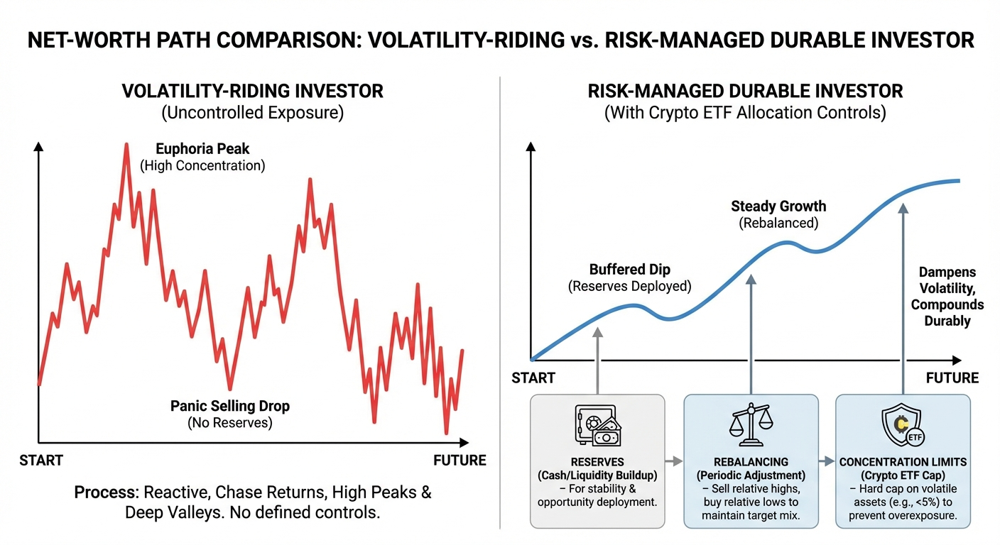

Crypto ETF Wealth Effect: Are Investors Building Durable Net Worth or Riding Volatility?
ETF access changed distribution, not the laws of drawdown math. Durable outcomes still depend on governance.
The crypto ETF era changed one thing immediately: access. People who would never open a crypto exchange account can now gain exposure through standard brokerage workflows, retirement accounts, and familiar portfolio tools. That is a structural shift. But easier access created a second question that matters more over a decade than over a week: does ETF-driven crypto exposure build durable household wealth, or does it mostly create temporary net-worth spikes that evaporate when volatility returns?

The answer is neither pure optimism nor pure skepticism. Crypto ETF exposure can absolutely contribute to long-run wealth, but only under position-sizing, liquidity, and behavior rules that most retail narratives ignore. Without those rules, the same ETF that improves access can increase fragility by amplifying concentration risk, drawdown stress, and bad timing behavior. In other words, the product is neutral. Portfolio architecture decides the outcome.
This post breaks down the crypto ETF wealth effect in practical terms: what has objectively changed since approval, where gains can translate into durable net worth, where they tend to remain “paper wealth,” and how to model crypto allocations inside a broader WealthMeter-style framework focused on resilience rather than screenshot moments.
What Changed When Spot Crypto ETFs Arrived
January 2024 marked a regulatory and market turning point when the U.S. Securities and Exchange Commission approved exchange-traded products holding spot bitcoin (SEC, 2024a). Later in 2024, the SEC also approved spot ether ETPs (SEC, 2024b). Whatever one thinks about crypto as an asset class, these approvals moved exposure from niche rails into mainstream portfolio infrastructure. That matters because infrastructure influences behavior as much as thesis does.
Before ETF access, many households faced operational barriers: wallet custody concerns, exchange counterparty risk perception, tax complexity anxiety, and platform trust issues. ETFs reduce several of those frictions. Investors can buy exposure in brokerage accounts with familiar controls and consolidated reporting. Advisors can incorporate allocations with standard compliance and custody frameworks. Retirement account participation becomes more feasible. Access got easier, and the investor base broadened.
But easier access does not remove volatility. It often increases participation from investors who underestimate that volatility because onboarding feels familiar. The “same app, same click, same statement” experience can make risk feel lower than it is. This is one reason the wealth effect can be misleading: convenience rises faster than risk literacy.
The Difference Between Wealth Effect and Wealth Durability
A wealth effect is what people feel when asset prices rise: confidence increases, spending may rise, and risk tolerance often expands. Wealth durability is different. It asks whether gains survive adverse regimes and continue compounding after shocks. A portfolio can produce a strong wealth effect and weak durability if gains are too concentrated, leveraged, or behaviorally unstable.
Crypto ETF exposure is especially sensitive to this distinction because realized long-run outcomes are heavily path-dependent. If an investor captures upside and de-risks intelligently, the allocation can improve total net worth significantly. If an investor pyramids exposure at highs, treats unrealized gains as permanent, and cannot tolerate drawdowns, the same allocation can destroy compounding by forcing liquidation at bad prices.
This is why statements like “crypto ETFs made people rich” are both true and incomplete. They can describe a period outcome. They do not describe process quality. Durable wealth requires repeatable process quality across cycles.
Where the Durable-wealth Case Is Strongest
1) Small-to-moderate strategic allocation in a diversified portfolio. A bounded allocation can provide asymmetric upside participation while preserving portfolio integrity during drawdowns. The key is that crypto exposure must remain a sleeve, not the identity of the portfolio.
2) Rebalancing discipline. When volatility is high, rebalancing can convert swings into risk-managed compounding. Investors who periodically trim oversized winners and replenish underweight core assets often preserve gains better than those who let concentration run unchecked.
3) Liquidity buffer protection. Households with strong emergency reserves can hold volatile assets through stress without forced selling. This single variable often determines whether crypto exposure becomes wealth-building or wealth-fragilizing.
4) Clear tax-aware exit rules. Durable wealth is not only about gross return. Net return after taxes and behavior costs matters. Investors who plan realization events intentionally usually outperform those who make impulsive all-in/all-out moves around sentiment swings.
In these conditions, ETF access can be constructive because it simplifies operational handling while maintaining exposure quality. The important phrase is “in these conditions.” Without them, the probability distribution worsens quickly.
Where the Fragility Case Is Strongest
1) Overconcentration disguised as conviction. A common pattern is letting one high-performing sleeve become too large relative to total net worth and then reframing concentration as strategic insight. This can work for a while and then break abruptly when regime shifts.
2) Lifestyle decisions based on unrealized gains. Households that raise fixed spending commitments based on volatile mark-to-market gains can become vulnerable when prices mean-revert. The wealth effect becomes a spending trap.
3) No downside governance. Investors often set upside targets but skip downside rules. Without pre-defined max allocation bands, rebalance thresholds, or drawdown response logic, decision quality tends to collapse in stress windows.
4) Correlated risk stacking. Some households combine concentrated tech equity exposure, crypto exposure, and career-income dependence on one sector. In benign markets this looks efficient. In correlated drawdowns it can create double or triple shocks.
These fragility channels are not theoretical. They are common enough that any credible wealth framework should assume they exist unless users explicitly demonstrate controls.
ETF Access Solved Infrastructure Friction, Not Behavioral Friction
One overlooked reality is that infrastructure improvements can increase participation without improving behavior. It is easier now to buy and hold crypto exposure, but it is also easier to overtrade, overconcentrate, and misread short-term performance as permanent skill.
Behavioral friction includes fear-of-missing-out entries, panic exits, narrative anchoring, and social comparison loops. ETFs do not solve these. In some cases, they accelerate them because participation is now mainstream and social proof intensity is higher. This is where wealth tooling can add real value: not by predicting prices, but by forcing better risk process at the portfolio level.
A practical rule is simple. If a position can materially change your lifestyle confidence in one month, it is probably too large for your current resilience profile. Confidence sensitivity is an underrated risk metric because behavior under stress often determines realized outcomes more than asset theory does.
Case Study: Two Investors, Same ETF, Opposite Outcomes
Consider two investors with identical starting net worth and identical initial crypto ETF exposure.
Investor A: Caps allocation at 10%, rebalances quarterly, maintains 9 months of essential expenses in liquid reserves, and treats gains as portfolio-level capital rather than lifestyle fuel.
Investor B: Lets exposure drift beyond 35%, adds during euphoric momentum phases without updated risk checks, and increases recurring spending based on unrealized gains.
During a bull phase, both look successful. Investor B may even look smarter because gains appear larger faster. During a major drawdown, outcomes diverge. Investor A endures and rebalances. Investor B often faces forced choices: reduce spending abruptly, liquidate near lows, or carry stress that impairs other decisions. Same asset, different architecture, opposite durability.
This is the core message of the crypto ETF wealth effect: returns matter, but system design matters more for what survives.
How to Measure “Durable Net Worth” with Crypto Exposure
If you want metrics beyond hype, track these five:
1) Concentration ratio: crypto ETF value as a percent of total net worth and as a percent of liquid net worth.
2) Liquidity runway: months of essential spending covered without touching volatile assets.
3) Rebalance adherence: percentage of scheduled rebalance windows executed according to policy.
4) Realization quality: share of gains harvested under predefined rules versus emotional timing decisions.
5) Confidence volatility: subjective stress score linked to portfolio swings; high sensitivity signals position-size mismatch.
These metrics move discussion from “up or down this quarter” to “is the wealth process compounding safely over cycles.” That shift is where durable outcomes live.
The Retirement Account Question
ETF structures expanded access through retirement accounts, which introduces both opportunity and responsibility. Opportunity because tax-advantaged wrappers can improve long-horizon compounding for appropriately sized exposure. Responsibility because retirement assets are usually less liquid and more mission-critical, so drawdown tolerance and timeline fit must be stricter.
A practical principle is to keep high-volatility sleeves within explicit policy bands in retirement portfolios and avoid using retirement accounts as momentum chase vehicles. The account wrapper can reduce friction, but it does not change the underlying asset’s volatility profile.
Investors should also separate speculative conviction from retirement probability. Retirement planning requires high confidence in minimum outcomes, not only hope for maximum outcomes. Crypto allocations can be additive, but the floor of the plan should never depend on best-case scenarios.
Tax and Policy Friction Still Matter
Another misconception is that ETF wrappers eliminate complexity entirely. They reduce custody and execution friction, yes. They do not eliminate tax consequences, policy uncertainty, or strategy timing risk. Realized gains still matter, account type still matters, and jurisdictional changes can still affect treatment over time.
For wealth durability, net-of-tax modeling is essential. A gross gain that triggers inefficient realization patterns may underperform a lower-volatility strategy with better tax efficiency and fewer behavioral errors. This is not anti-crypto. It is pro-process.
Correlation Regimes: The Risk Most Investors Underestimate
Investors often assume diversification from narrative differences rather than correlation behavior. In some risk-on regimes, crypto and high-beta tech exposures can move together. If your income, equity portfolio, and crypto sleeve are all effectively tied to the same macro risk factor, you may be less diversified than your asset labels suggest.
This matters for households in tech-centric labor markets. A sector drawdown can hit compensation, equity grants, and crypto holdings simultaneously. Without strong reserves, this can force exactly the wrong action at exactly the wrong time. Durable planning requires stress-testing against correlated downside, not just isolated volatility.
A 4-Bucket Allocation Approach That Works Better Than Guessing
One practical approach is to organize portfolio logic into four buckets:
Core stability: cash, short-duration reserves, and high-quality defensive assets.
Core growth: diversified long-term equity exposure.
Opportunistic growth: higher-volatility sleeves including crypto ETFs within capped ranges.
Strategic optionality: dry powder for rebalancing and opportunity deployment.
Crypto ETFs fit best in opportunistic growth with strict sizing and rebalancing protocols. This preserves upside participation without allowing one thesis to rewrite the entire wealth plan. The point is not to suppress returns. The point is to keep one sleeve from dictating family-level risk outcomes.
What Is Overstated in Current Social Chatter
Overstatement 1: “Crypto ETFs guarantee mainstream wealth creation.” Access is mainstream. Outcomes are still path-dependent and behavior-dependent.
Overstatement 2: “If institutions are in, downside risk is solved.” Institutional participation can change market structure but does not erase volatility or cycle risk.
Overstatement 3: “Volatility is irrelevant if long-term thesis is right.” Volatility is always relevant when it influences behavior, liquidity, and life decisions.
Overstatement 4: “You must choose between all-in or no exposure.” Most durable outcomes come from bounded exposure and process discipline, not identity-level positioning.
A 12-Month Crypto ETF Durability Plan
Month 1: Define maximum allocation bands and downside governance rules.
Month 2: Build or replenish emergency reserves before increasing volatile exposure.
Months 3-4: Implement scheduled rebalance policy and document execution.
Months 5-6: Audit concentration across all correlated risk exposures, including employment dependency.
Months 7-9: Evaluate tax-aware realization strategy and adjust account-location choices where possible.
Months 10-12: Review outcomes by process metrics, not only return metrics. Keep what works, tighten what failed under stress.
This plan is deliberately operational. Wealth durability is an operations problem as much as an asset-allocation problem.
What This Means for WealthMeter-Style Product Logic
If your framework ranks households by net worth and percentile, crypto ETF exposure introduces model-design obligations. A high net-worth percentile driven by one volatile sleeve should carry a durability qualifier. Users need to see the difference between headline position and resilience-adjusted position.
A useful feature is “Volatility-Adjusted Wealth Rank,” which applies concentration and liquidity penalties to nominal rank outputs. Another is “Shock-Scenario Rank,” showing where users fall after modeled drawdowns. These features can reduce false confidence and improve decision quality without telling users what to buy or sell.
Most importantly, tools should separate growth narratives from resilience narratives. Growth narratives are inspiring. Resilience narratives keep people financially intact when markets stop being friendly. Durable products need both.
Speculation, Clearly Labeled
Speculation, clearly labeled: Over the next three to five years, the strongest households in this cycle will likely be those who used crypto ETF access to improve portfolio asymmetry while preserving strict liquidity and concentration controls. Households that used access to justify unchecked risk concentration may show stronger short snapshots but weaker long-run compounding once full-cycle volatility is included.
Bottom Line
The crypto ETF wealth effect is real. It can create substantial gains and broaden participation in a new asset category. But access is not the same as durability. Durable net worth requires a system that survives volatility, not just celebrates it. Position sizing, reserve strength, rebalancing discipline, and tax-aware execution are the difference between compounding and regret.
In that sense, the most important question is not “Did crypto ETFs go up?” The most important question is “Did my process convert volatility into lasting optionality?” If the answer is yes, you are building wealth. If the answer is no, you are renting the cycle.
A Deeper Scenario: Same Return, Different Wealth Outcome
Here is a useful thought experiment. Two investors both earn the same annualized return on their crypto ETF sleeve over five years. On paper, they look identical. In reality, one ends with materially higher total net worth because process quality differs.
Investor X process: steady allocation band, annual tax planning, no forced withdrawals, and periodic gains transfer into core diversified assets.
Investor Y process: pro-cyclical allocation increases, irregular tax realization, occasional borrowing against volatile assets, and no structured de-risking.
Even with similar sleeve returns, Investor X can end with stronger total wealth because volatility is harvested into durable assets. Investor Y can end with weaker resilience due to concentration and friction costs. This is one of the most important but least discussed points in retail crypto discussions: the wealth outcome is not the chart alone. It is chart plus behavior plus architecture.
The Rebalancing Premium in Volatile Asset Classes
Volatile assets can create a rebalancing premium when investors maintain disciplined target bands. This does not require forecasting tops and bottoms. It requires rules. If a crypto sleeve rises above policy weight, trim systematically into core holdings. If it falls below policy weight and risk budget allows, rebalance back up in defined increments. Over time, this can reduce emotional timing and improve risk-adjusted compounding.
Most households do the opposite. They increase exposure after large upside moves and reduce exposure after painful drawdowns. This behavior is understandable and expensive. ETF access makes execution easier, but it does not make process automatic. Households that explicitly codify rebalance rules generally fare better than those relying on intuition.
A practical implementation is quarterly policy checks with tolerance bands, for example ±20% of target weight. If target allocation is 8%, rebalance triggers could activate above 9.6% or below 6.4%. Exact thresholds vary by user risk profile. The key is consistency and precommitment.
The Household Balance-Sheet Interaction Most People Miss
Crypto ETF risk cannot be evaluated in isolation. It interacts with the rest of the household balance sheet. A 10% allocation might be conservative for a household with high liquidity, low fixed obligations, and diversified income. The same 10% can be aggressive for a household with thin reserves, high debt service, and cyclical income.
This is why universal allocation rules fail. Context matters more than slogans. Advisors and self-directed investors alike should map volatility capacity at the household level: reserve depth, debt maturity profile, income stability, and upcoming cash needs. Without this mapping, allocation decisions are often copied from social proof rather than engineered for fit.
An especially risky pattern is combining high-volatility assets with high fixed lifestyle commitments. When the market turns, households can become forced sellers to meet obligations. Forced selling is where theoretical long-term theses break against real-life constraints.
Drawdown Tolerance Is a Behavioral Metric, Not a Personality Trait
Many investors claim high risk tolerance during bull phases. True tolerance is revealed during drawdowns, not during gains. A robust plan should define what happens at -20%, -40%, and -60% sleeve declines before they happen. Not because those outcomes are guaranteed, but because volatile assets make them plausible.
Predefined drawdown playbooks reduce panic decisions. For example, the plan might specify: no new leverage, no emergency liquidation if reserves remain intact, and mandatory review of concentration caps. The objective is to preserve decision quality under stress. Decision quality under stress is the hidden engine of durable wealth.
One simple but powerful tool is a “sleep test.” If portfolio swings repeatedly reduce sleep quality or cause intrusive stress, allocation is probably too high for current life stage, regardless of expected return arguments. Wealth should improve life design, not destabilize it.
How to Integrate Crypto ETFs into Retirement Planning Without Overfitting
Retirement planning requires both growth and reliability. Crypto ETF exposure can serve growth potential, but reliability must remain anchored in diversified core assets and robust cash-flow planning. A good rule is to ensure that required retirement income scenarios are funded without depending on best-case crypto outcomes.
That means stress-testing withdrawal plans under multiple return sequences, including deep early drawdowns in the crypto sleeve. If retirement viability collapses under a plausible stress scenario, exposure may be oversized relative to objective. Exposure can still be retained, but only after redesigning the broader plan to protect the floor.
For households not yet near retirement, the same logic applies at a different timescale. Build a floor first, then pursue optional upside. Floor-first is not anti-upside. It is anti-fragility.
The Advisor Opportunity: Process as Product
Many advisors avoided digital assets in early years due to custody, compliance, and suitability uncertainty. ETF structures lower some barriers and open a practical advisory opportunity: process differentiation. Clients do not only need access. They need governance.
Advisors who can translate crypto exposure into policy bands, tax-aware realization, reserve management, and behavioral coaching are likely to deliver stronger long-run value than advisors who frame the conversation as yes-or-no asset class ideology. The middle path is often where durable outcomes are built.
This also aligns with client communication quality. Instead of debating absolute conviction, advisors can discuss conditional allocation: what size fits this household, what rules govern changes, and what stress indicators trigger action. That language is more precise and more defensible.
What Household Investors Can Implement This Quarter
Step 1: Write your target allocation range and hard maximum in one place.
Step 2: Separate emergency reserves from investment accounts completely.
Step 3: Define rebalance dates and threshold bands now, not later.
Step 4: Add a gains-transfer rule: periodically move a fixed share of large upside into diversified core assets.
Step 5: Run a correlated stress test including job risk, equity drawdown, and crypto drawdown in one scenario.
Step 6: Review tax implications before major realization events.
Step 7: Repeat quarterly with the same scorecard.
This seven-step cycle is not glamorous, but it addresses the failure points that typically convert wealth effects into volatility fatigue.
How to Tell If You Are Building Wealth or Just Riding Narrative Momentum
Ask four diagnostic questions.
1. If crypto ETF prices fall sharply, does your life plan change materially within six months?
2. Are your gains increasingly concentrated in one sleeve without intentional policy?
3. Are you increasing recurring spending based on unrealized portfolio moves?
4. Do you have written rules for sizing, rebalancing, and realization?
If the first three answers are yes and the fourth is no, you are likely riding momentum more than building durable wealth. The good news is this can be corrected quickly with governance.
The Institutional Signal and Its Limits
Institutional adoption narratives often create a false comfort that volatility risk has structurally declined. Institutional participation can improve market depth and legitimacy, but it does not eliminate macro sensitivity, liquidity shocks, or sentiment cycles. Investors should treat institutional presence as market evolution, not as risk immunization.
In practical planning, this means maintaining the same discipline standards regardless of adoption headlines. If anything, broader adoption argues for stronger risk process because more participants and larger flows can increase narrative speed and crowding behavior.
What This Means for the Next Cycle
Speculation, clearly labeled: If ETF access continues to expand and market narratives stay intense, the next cycle may produce even wider dispersion between households that apply process discipline and those that rely on conviction alone. The winners may not be those with the boldest takes, but those with the best execution systems.
That is the long-run lesson. Durable wealth is less about being early to every story and more about surviving every regime while keeping compounding intact.
If you want a practical north star, use this: your portfolio should still make sense to you on an ordinary day, not only on a euphoric day. When allocation logic survives boredom, fear, and excitement with the same written rules, the wealth process is usually strong. When logic changes with every headline, wealth tends to become a sentiment trade.
Key Takeaways
Crypto ETFs improved access, but access alone does not produce durable wealth.
Long-run outcomes depend on position sizing, reserve strength, and process discipline more than narrative conviction.
Volatility can build wealth only when households can hold through stress without forced bad decisions.
The right benchmark is not quarterly gains. It is whether gains remain after full-cycle drawdowns and real-life constraints.

Source List
SEC (January 10, 2024). Statement on approval of spot bitcoin ETPs
SEC (May 23, 2024). Statement on approval of spot ether ETP filings
Federal Reserve (2023). Changes in U.S. family finances from 2019 to 2022
FINRA Investor Education Foundation (2023). Investor behavior and financial capability resources
IRS (2025). Digital assets tax guidance overview
Stress-test the lifespan side of this balance-sheet story.
Open the matching LifeMeter scenario with a prefilled planning profile so the wealth case and the health-runway case can be read together.